Radio astronomy · Gravitational waves
Host-Galaxy Identification of Continuous-Gravitational-Wave Sources with Low-Frequency VLBI
More precise pulsar distances can constrain the pulsar-term phase in pulsar timing arrays (PTAs). This study forecasts when low-frequency VLBI astrometry can help locate continuous gravitational-wave sources.
View poster (PDF)Key results
- Calibration changes where low frequencies help. Improved ionospheric calibration expands the sky regions where 300-MHz distance priors outperform 1600-MHz priors. A retained measurement-noise floor limits the gain.
- The advantage depends on the GW source. Selected low-frequency, low-chirp-mass GW regimes favor 300-MHz astrometry. Relative improvement can still accompany a large absolute localization area.
- Targeted astrometry is promising. J1630+3734 and J0307+7443 stand out as useful anchor candidates in prior-substitution and leave-one-out tests of the illustrative pulsar sample.
Background & motivation
Pulsar timing arrays use millisecond pulsars as precise clocks to probe nanohertz gravitational waves, including a stochastic background and continuous signals from supermassive black-hole binaries (SMBHBs). A common source produces a geometric pattern in pulse arrival-time residuals across the array.
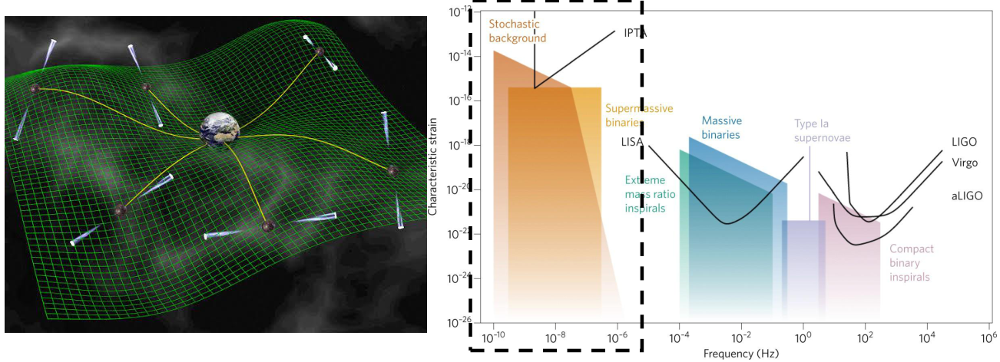
Why pulsar distances affect localization
The timing response includes an Earth term and a pulsar term. The latter couples the pulsar distance \(L_p\) to the GW propagation direction \(\hat\Omega\) and the pulsar direction \(\hat p\):
Precise VLBI astrometry supplies independent distance priors, reducing phase uncertainty and helping break degeneracies with source direction [3], [4].
Why low-frequency VLBI?
Pulsars are often brighter at lower radio frequencies, but ionospheric errors also increase. The poster motivates a possible crossover around 300–350 MHz and searches for new high-impact anchor pulsars in this band. Its instrument diagram places SKA-Low at 50–350 MHz and BURSTT at 300–800 MHz; the shared band motivates the comparison, rather than establishing a universal optimum.
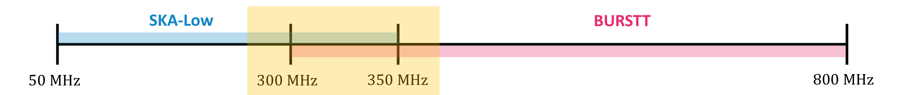
Method & setup
Signal model and Fisher localization
The forecast assumes a circular, quasi-monochromatic SMBHB source and Gaussian white timing noise. For pulsar \(i\), the residual retains both terms, with antenna response \(F_i^A\), integrated strain \(s_A\), and geometric delay \(\tau_i\):
The parameters are chirp mass, GW frequency, initial phase, luminosity distance, inclination, polarization, two source-position angles, and one distance for each pulsar:
Here \(J\) is the residual Jacobian and \(C\) the timing-noise covariance. The inverse precision matrix provides a marginalized sky covariance after accounting for correlations with the remaining parameters.
From ionospheric calibration to distance priors
A synthetic Kolmogorov-type ionosphere is sampled at three calibrators and one target. MultiView calibration fits the screen at the calibrators and estimates its value toward the target [5]–[7]. The remaining differential total electron content (TEC) is propagated into astrometric uncertainty. The poster quotes about 0.4 mTECU calibrator measurement precision from LOFAR work and about 2.0 mTECU baseline simulated residual RMS; these are different quantities.
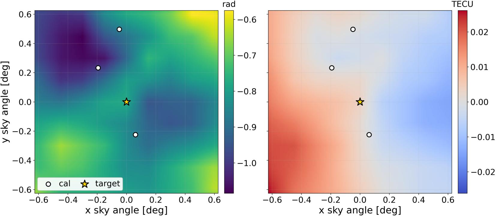
The thermal branch combines pulsar flux, array sensitivity, bandwidth, and integration time to estimate signal-to-noise ratio and position uncertainty, approximately \(\sigma_{\rm th}\sim\theta_{\rm beam}/(2\,\mathrm{SNR})\). Both error contributions enter a multi-epoch parallax fit, then a distance prior.
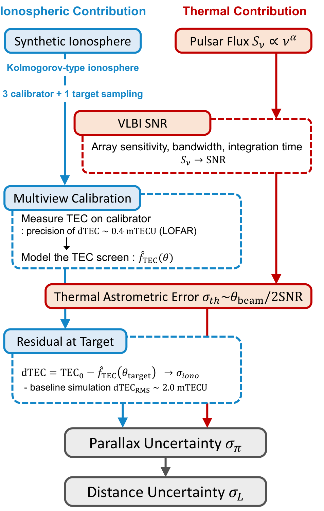
| Radio comparison | 300 MHz versus 1600 MHz |
|---|---|
| Nominal parallax campaign | 8 epochs over 2 years; 8 hours per epoch; LAMBDA baseline configuration |
| Illustrative PTA | 16 MSPs from ATNF: 8 with low thermal error at 300 MHz, plus 8 additional nearby MSPs |
| Calibration scenarios | ×1, ×2, ×5 improvement tests |
For small fractional parallax errors, the conversion is approximately \(\sigma_L[\mathrm{pc}]\simeq\sigma_\pi[\mu\mathrm{as}]\,(L[\mathrm{kpc}])^2\). The resulting \(\sigma_L\) values supply the Gaussian distance priors.
Results
1. Low-frequency anchor-pulsar candidates
Several 300-MHz candidates remain promising despite stronger ionospheric effects. The parallax comparison separates array configurations, integration times, and the two selection groups. Dashed curves show distance-prior reference scales for GW frequencies of 3, 10, and 30 nHz.
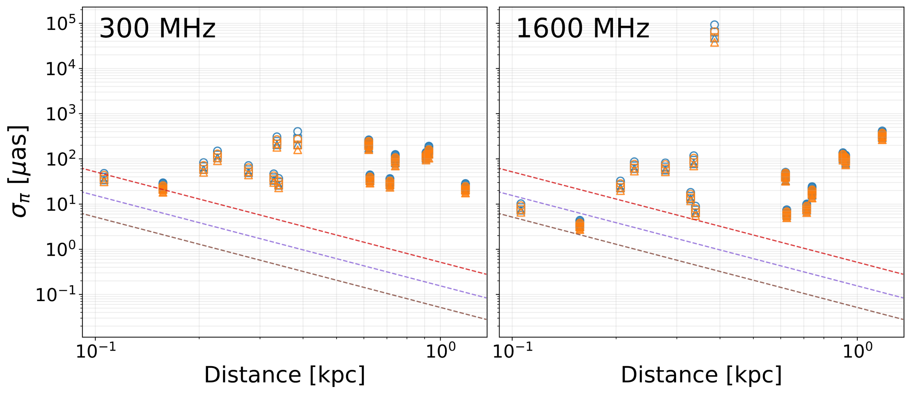
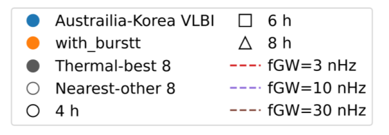
2. Calibration-dependent sky localization
Improved calibration expands the sky regions in which 300-MHz distance priors give smaller forecasted localization areas than 1600-MHz priors. The comparison uses \(G=\log_{10}(A_{1600}/A_{300})\): positive values favor 300 MHz, while negative values favor 1600 MHz.
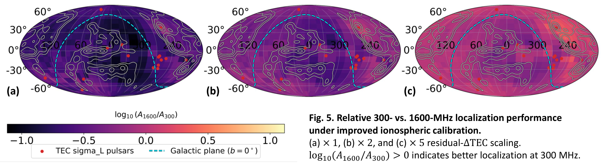
The Monte Carlo scenarios behind these maps reduce screen-curvature residuals while retaining calibrator measurement noise. Thus ×2 or ×5 does not imply the same reduction in total astrometric error or sky area.
3. Host-candidate counts around Hercules
The Hercules cluster (Abell 2151) is a favorable regional example. In its core, the poster reports approximately 50 projected candidates at 300 MHz under ×1 calibration, falling to about 25 under ×2, compared with roughly 20–30 at 1600 MHz. These are location-specific forecast counts, not confirmed hosts.
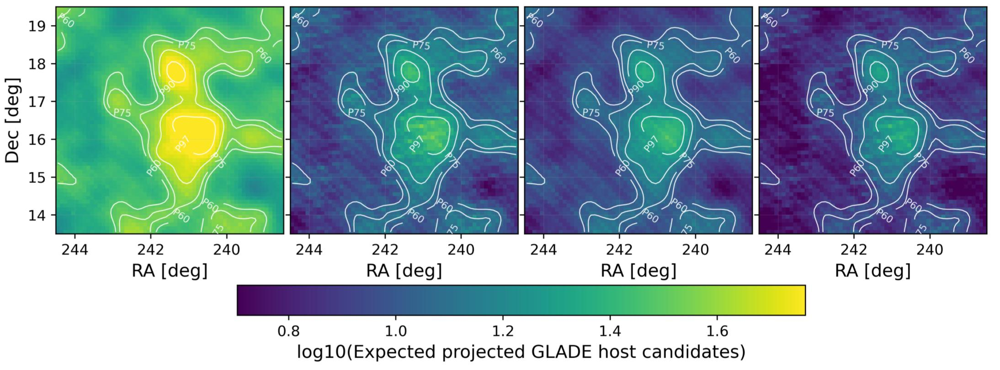
The expected projected count combines localization area and catalog surface density, \(N_{\rm cand}\simeq A_{\rm loc}\,\Sigma_{\rm gal}\). It estimates follow-up burden rather than assigning host probabilities to individual galaxies.
4. Localization across GW parameter space
The parameter-space forecast separates absolute 300-MHz precision from its relative advantage over 1600 MHz. Selected weak-signal regimes retain a low-frequency advantage, even when the absolute area is still large. For context, chirp masses of \(10^8\)–\(10^9\,M_\odot\) and frequencies of 1–10 nHz correspond to massive SMBHBs with multi-year orbital timescales.
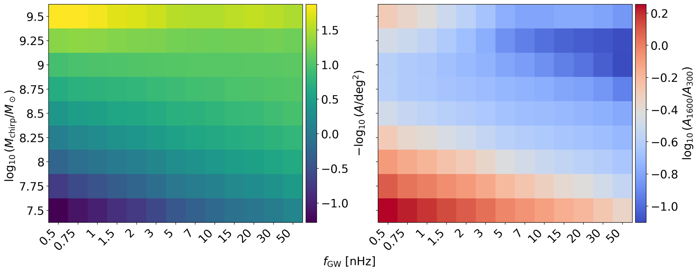
5. Identifying high-impact anchor pulsars
Two complementary tests highlight J1630+3734 and J0307+7443. The first replaces only one pulsar's 1600-MHz prior with its 300-MHz forecast, measuring the directional area improvement:
The second restores one pulsar's high-frequency prior while keeping its timing data, and measures how much the solid-angle-weighted sky fraction favoring low frequencies decreases:
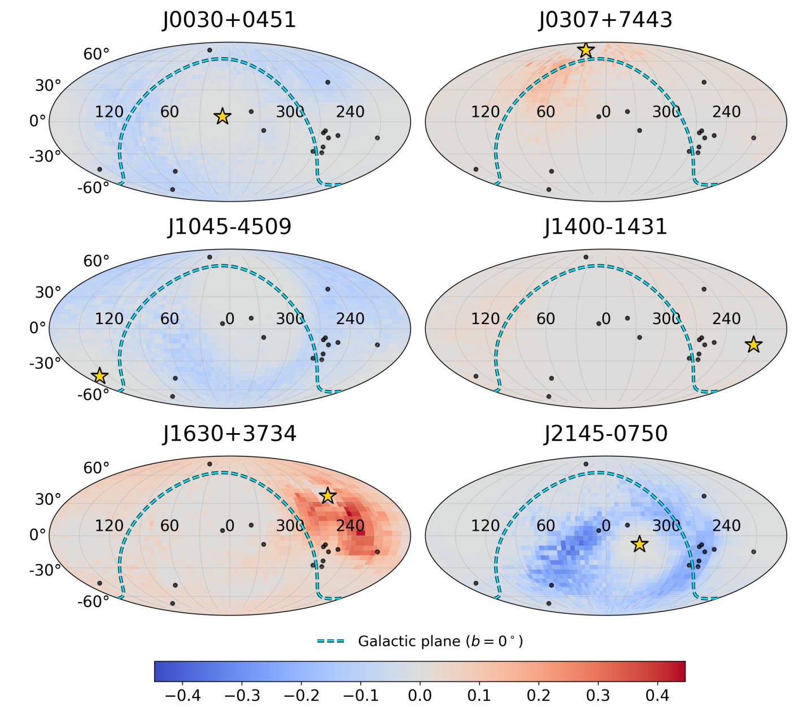
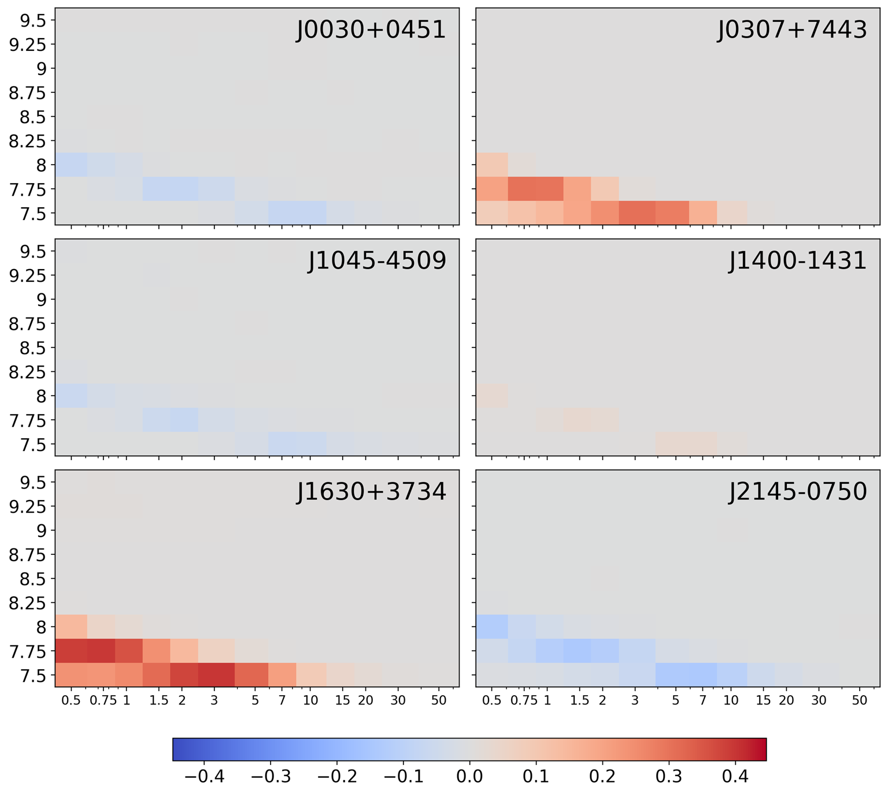
Their agreement motivates targeted VLBI observations. The ranking depends on the illustrative sample, source direction, and GW parameters.
Figure conventions and interpretation
Figure 4 uses the original ionospheric-scaling outputs; Figures 5–6 use Monte Carlo residuals with a measurement floor. Their equal factor labels do not imply identical residual prescriptions.
The poster labels the density overlays HECATEv2 within 200 Mpc (Fig. 5) and GLADE+ within 800 Mpc (Fig. 6). The source audit leaves the applied HECATE distance cut and the GLADE catalog version unresolved. The approximate core counts also lack a reproducible core-aperture definition. These overlays do not enter the Fisher matrix.
Figures 7–9 trace to 20-year PTA calculations, distinct from the two-year VLBI parallax campaign. The Fig. 7 ratio is positive for 300 MHz and negative for 1600 MHz; the poster's repeated word “positive” for the latter case is a caption typo.
Conclusions & next steps
- SKA-Low-assisted VLBI astrometry has potential to improve PTA continuous-GW localization.
- Low-frequency astrometry remains competitive in selected weak-GW regimes.
- A small number of high-impact pulsars motivate targeted calibration and parallax observations.
Performance depends strongly on ionospheric calibration. Next steps include realistic time-dependent ionospheric modeling, observational validation, broader GW parameter-space studies, and optimized pulsar selection.
These are idealized Fisher forecasts. Realistic red timing noise, dispersion-measure variations, and other correlated processes require further treatment before interpreting the maps as observational performance.
Poster references
- Faesi, C. (2012). “The Race to Detect Gravitational Waves: Pulsar Timing Arrays.” Astrobites, November 23. Concept illustration credit.
- Lommen, A. N. (2017). Nature Astronomy. doi:10.1038/s41550-017-0324-9. Frequency-spectrum illustration credit.
- Kato, R. & Takahashi, K. (2023). Physical Review D, 108, 123535. arXiv:2308.10419.
- Kato, R. & Takahashi, K. (2025). arXiv:2506.02819.
- Rioja, M. J. et al. (2017). AJ, 153, 105. MultiView astrometry.
- Dodson, R. & Rioja, M. J. (2019). arXiv:1907.01810.
- Mevius, M. et al. (2016). Radio Science, 51, 927–941. Ionospheric structure with LOFAR.
- Manchester, R. N. et al. (2005). AJ, 129, 1993–2006. ATNF Pulsar Catalogue.
- Kyritsis, E. et al. (2026). MNRAS, 548, stag522. HECATEv2.
- Dálya, G. et al. (2022). MNRAS, 514, 1403–1411. GLADE+.
- Boyde et al. (2024). Radio Science. doi:10.1029/2023RS007871.
- Sokolowski et al. (2022). PASA, 39, e015. SKA-Low sensitivity.
- Lin et al. (2022). PASP, 134, 094106. BURSTT.